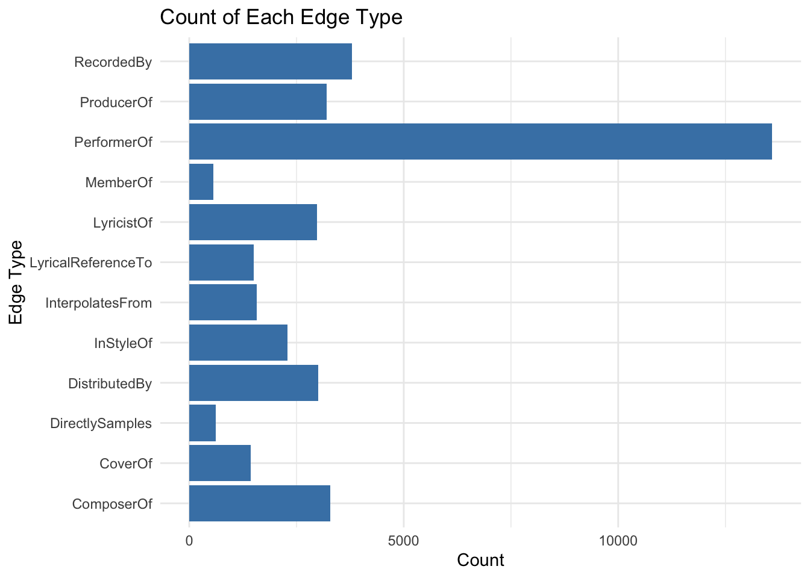
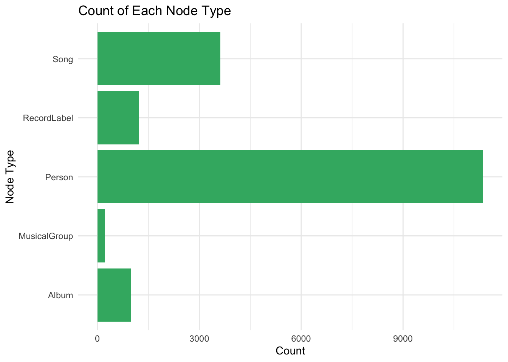
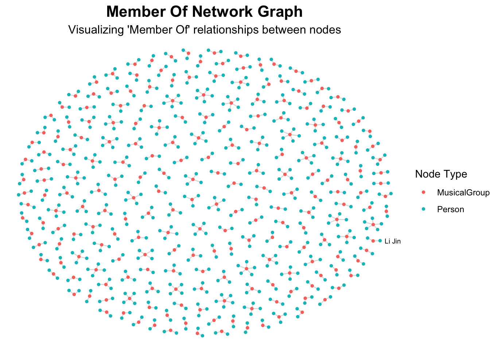
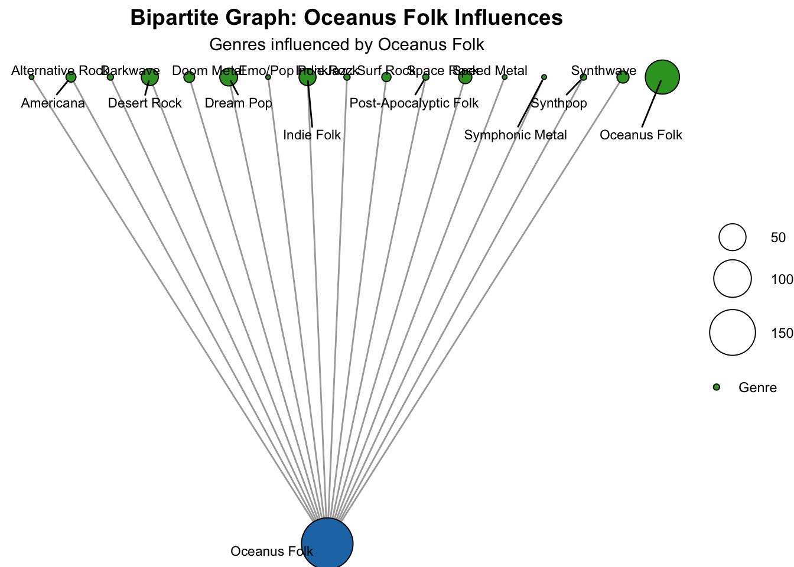
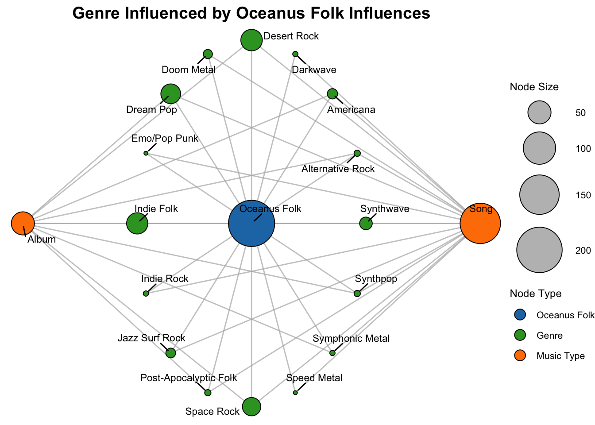
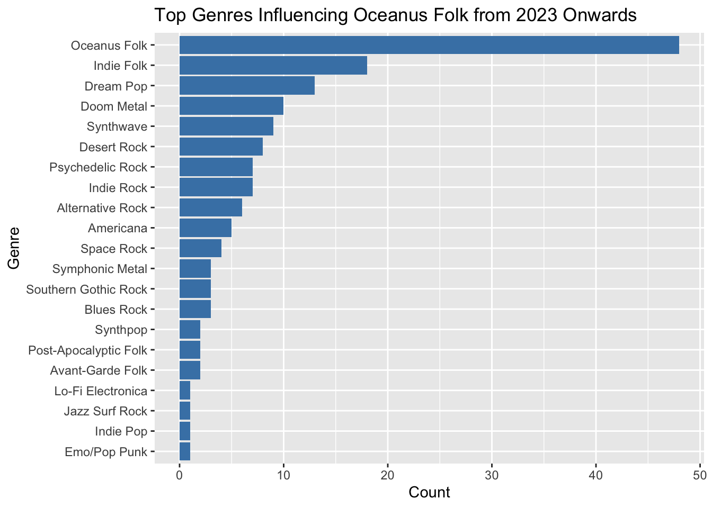
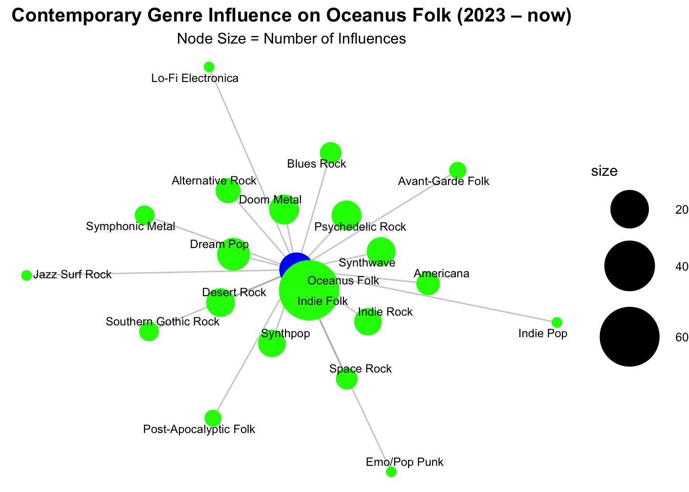
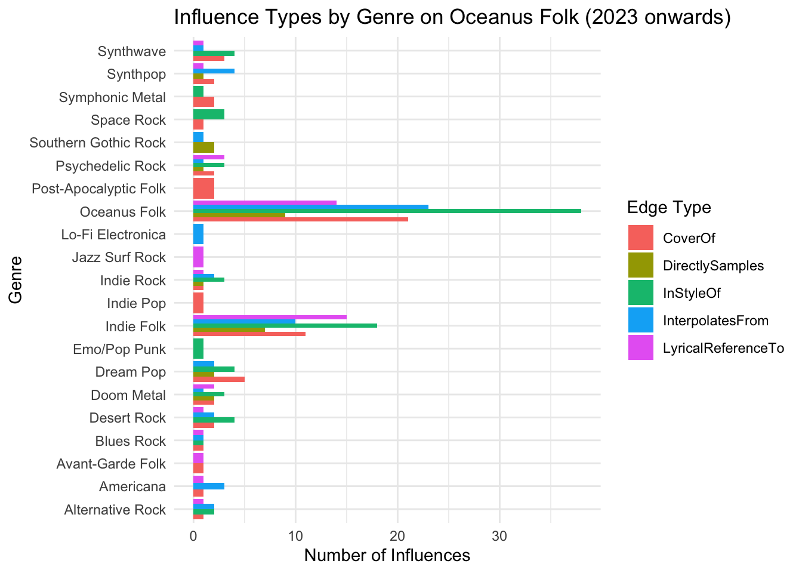

pacman::p_load(
jsonlite, # for reading JSON files
tidyverse, # includes dplyr, tidyr, ggplot2, stringr, etc.
lubridate, # for date handling
patchwork, # for combining ggplots
ggraph, # for graph visualizations
tidygraph, # for working with tidy network data
igraph, # backend graph structure
visNetwork, # for interactive network graphs
kableExtra, # for enhanced table formatting (if used in reporting)
shiny
)Take_Home_2 - Mini case 1
1 Setting the Scene
1.1 Background
The quiet island nation, once mostly known for its fishing industry, is now seeing a big rise in tourism. This growing interest is mainly because of the increasing popularity of the Oceanus Folk genre, which started on the island and became globally known through its local superstar, Sailor Shift.
Sailor began her music career in 2023 as part of the Oceanus Folk band Ivy Echoes. After the group disbanded in 2026, she found solo success in 2028. Her viral single not only hit the top of global charts—becoming the first Oceanus Folk song to do so—but also pushed her into the spotlight as an international star.
Since then, Sailor has released a new album nearly every year, each one doing better than the last. Even though she’s explored other genres like Indie Pop and Indie Folk through collaborations, she always circles back to her Oceanus Folk roots. This genre’s global reach keeps growing, and a big part of that is thanks to Sailor’s work. Her collaborations stand out because she stays focused on two things:
Sharing and promoting Oceanus Folk.
Helping new artists grow.
Aside from her own career, Sailor’s success also brought attention to her former Ivy Echoes bandmates. All of them are still active in the music scene. Together, they’ve helped grow Oceanus Folk’s influence and opened the door for a new wave of rising artists in the genre.
1.2 Task
For these 2025 VAST Challenge (MC1), this project aims to support local journalist Silas Reed in crafting a piece titled “Oceanus Folk: Then-and-Now.” This article will chronicle the ascent of Sailor Shift and the pervasive influence of Oceanus Folk within the music industry. To achieve this, we’re leveraging a comprehensive dataset that includes musical artists, producers, albums, songs, and their intricate influence networks, all organized as a knowledge graph.
Our goal is to transform this rich data into insightful visualizations, revealing new and compelling information about Sailor’s journey to stardom and the broader impact of Oceanus Folk on the music world which summarized in 3 questions:
- Was the influence intermittent (not continuous, not stable, occurring at irregular intervals) ?
- What genre and top artist have been most influenced by Oceanus Folk?
- How has Oceanus Folk changed with the rise of Sailor Shift? From which genre does it draw most of its contemporary inspiration?
2 Data Preparation
2.1 Package Installation
We start by loading the required R packages using the pacman::p_load() function. Each package serves a specific purpose for our analysis:
2.2 Loading Data
In this step, we load the data from the VAST Challenge 2025 – Mini Challenge 1 dataset.
This dataset contains:
17,412 nodes
37,857 edges
The datas represent musical entities such as artists, songs, albums, music groups, and genres. which also include the the edges that describe relationships like collaborations and influences.
Additionally we will also explore the data structure to …..
Code
# Load Data
data <- fromJSON("~/Documents/SMU/April Term 2/Visual Analytics/patriciatrisno/ISSS608-VAA/VAST Challenge 2025/MC1/MC1_graph.json")str(data, max.level = 1)List of 5
$ directed : logi TRUE
$ multigraph: logi TRUE
$ graph :List of 2
$ nodes :'data.frame': 17412 obs. of 10 variables:
$ links :'data.frame': 37857 obs. of 4 variables:The data includes:
Node types:
Person,Song,RecordLabel,Album,MusicalGroupEdge types:
MemberOf,PerformerOf,ComposerOf,ProducerOf,LyricistOf,InStyleOf,InterpolatesFrom,CoverOf,LyricalReferenceTo,DirectlySamples,RecordedBy,DistributedBy
2.3 Extract Edges and Nodes Tables
We convert the JSON data into data frames for easier analysis and transformation.
This step helps us organize the data for analysis, such as filtering, labeling, and visualizing relationships. We also convert date columns into integers to simplify later operations like filtering and sorting by year.
Code
nodes_tbl <- as_tibble(data$nodes)
edges_tbl <- as_tibble(data$links)
# Convert Dates to Integers and Clean NA Values
nodes_tbl <- nodes_tbl %>%
mutate(across(c(release_date, notoriety_date, written_date),
~as.integer(if_else(`Node Type` %in% c("Song", "Album"), ., NA_character_))))2.4 Initial EDA
Code
ggplot(data = edges_tbl, aes(y = `Edge Type`)) +
geom_bar(fill = "steelblue") +
labs(title = "Count of Each Edge Type", y = "Edge Type", x = "Count") +
theme_minimal()
Code
ggplot(data = nodes_tbl, aes(y = `Node Type`)) +
geom_bar(fill = "mediumseagreen") +
labs(title = "Count of Each Node Type", y = "Node Type", x = "Count") +
theme_minimal()
2.5 Labeling the Nodes and Edges
This step is important for categorizing the data based on its type and role. It allows us to clearly define what each node and edge represents in the graph.
We group similar edge types into broader categories for clearer analysis:
Creator Of: edges like PerformerOf, ComposerOf, ProducerOf, LyricistOf, etc.
Influenced By: edges like InterpolatesFrom, InStyleOf, CoverOf, etc.
Member Of: edges that indicate group memberships
We also label nodes by type and genre. For instance, nodes in the genre Oceanus Folk are marked accordingly.
Code
# Group Similar Edge Types
edges_tbl <- edges_tbl %>%
mutate(`Edge Define` = case_when(
`Edge Type` %in% c("PerformerOf", "ComposerOf", "ProducerOf", "LyricistOf") ~ "Creator Of",
`Edge Type` %in% c("InStyleOf", "InterpolatesFrom", "CoverOf", "LyricalReferenceTo", "DirectlySamples") ~ "Influenced By",
`Edge Type` == "MemberOf" ~ "Member Of",
TRUE ~ "Other"
))
# Label Nodes and Adding Column for Further Needs
nodes_tbl <- nodes_tbl %>%
mutate(`Node Colour` = case_when(
`Node Type` == "Person" ~ "Person",
`Node Type` == "MusicalGroup" ~ "MusicalGroup",
`Node Type` == "Song" ~ "Song",
`Node Type` == "Album" ~ "Album",
`Node Type` == "Record Label" ~ "Record Label",
),
`Node Shape` = case_when(
`Node Type` %in% c("Person", "MusicalGroup") ~ "Artist",
`Node Type` %in% c("Song", "Album") ~ "Music",
TRUE ~ "Record Label"
),
label = case_when(
`Node Type` %in% c("Person", "MusicalGroup", "RecordLabel") ~ name,
`Node Type` %in% c("Song", "Album") ~ paste0(name, " (", `Node Type`, ")"),
TRUE ~ name
),
role = `Node Type`,
title = paste0("<b>Name:</b> ", name,
"<br><b>Role:</b> ", role,
ifelse(!is.na(genre), paste0("<br><b>Genre:</b> ", genre), ""),
ifelse(!is.na(release_date), paste0("<br><b>Year:</b> ", release_date), ""))
)2.6 Set the Commonalities
2.6.1 Define the shape
To make the graph clearer, we assign shapes to node categories:
Person/Musical Group: Triangle (▲)
Song/Album: Square (■)
Other: Circle (●)
This helps in visually identifying different node types in the network graph.
Code
# Define Shape Mapping
shape_map <- c(
"Artist" = 17, # Triangle ▲
"Music" = 15, # Square ■
"Record Label" = 16 # Circle ●
)2.6.2 Color Mapping
Code
# Define Color Mappings
node_colors <- c(
"Person" = "deepskyblue",
"MusicalGroup" = "purple",
"RecordLabel" = "lightpink",
"Song" = "darkred",
"Album" = "lightblue",
"Other Genre" = "gray",
"Oceanus Folk" = "gold"
)
edge_colors <- c(
"Influenced By" = "#FF5733",
"Creator Of" = "#8A2BE2",
`NA` = "transparent"
)3 Create Knowledge Graph
3.1 ID Mapping
to ensures each id from the node list is mapped to the correct row number. This requirement can be achive by using the code chunk below.
Code
id_map <- tibble(id = nodes_tbl$id,
index = seq_len(
nrow(nodes_tbl)))
# Map source and target IDs to row indices
edges_tbl <- edges_tbl %>%
left_join(id_map, by = c("source" = "id")) %>%
rename(from = index) %>%
left_join(id_map, by = c("target" = "id")) %>%
rename(to = index)
# Filter out any unmatched (invalid) edges
edges_tbl <- edges_tbl %>%
filter(!is.na(from), !is.na(to))3.2 Creating tidygraph
tbl_graph() creates the graph structure in R. It connects nodes and edges based on relationships (influences, creator of songs, etc.). We specify directed = TRUE because influence flows in a direction.
Code
graph <- tbl_graph(nodes = nodes_tbl,
edges = edges_tbl,
directed = data$directed)4 Visualizing Knowledge Graph - Part 1
This part we will visualize the whole graph with the data set from nodes_tbl and edges_tbl
set.seed(1234)4.1 Sub-Graph - Member Of
Code
# Filter only Member Of
graph_member_of <- graph %>%
activate(edges) %>%
filter(`Edge Type` == "MemberOf")
#Extract Connected Nodes Only
used_node_indices <- graph_member_of %>%
activate(edges) %>%
as_tibble() %>%
select(from, to) %>%
unlist() %>%
unique()
# Keep Only the Choosen Nodes
graph_member_of <- graph_member_of %>%
activate(nodes) %>%
mutate(row_id = row_number()) %>%
filter(row_id %in% used_node_indices) %>%
select(-row_id) # optional cleanup
# Plotting
ggraph(graph_member_of, layout = "fr") +
geom_edge_link(alpha = 0.5, colour = "gray") +
geom_node_point(aes(color = `Node Type`), size = 1) +
geom_node_text(aes(label = name), repel = TRUE, size = 2.5) +
theme_void() +
labs(
title = "Member Of Network Graph",
subtitle = "Visualizing 'Member Of' relationships between nodes"
) +
theme(
plot.title = element_text(size = 16, face = "bold", hjust = 0.5),
plot.subtitle = element_text(size = 12, hjust = 0.5)
)
This Graph can give rough idea on how many artist and musical group are listed, while for more details we also able to see to which musical group each artist part of
5 Understand Sailor Shift Influence Networks
Sailor Shift notes as the main in music industry especially .. Oceanus Folk genre. … which also notable reason for us to iunderatnd its influences
In this part we aim to visualize the influence network of Sailor Shift. This helps us understand how the Oceanus Folk genre spreads through Sailor Shift’s network. As for this pre visualization we will focusing on:
Start with Sailor Shift (the person node).
First-level: Artists or musical groups directly influencing Sailor Shift.
Second-level: Songs or albums created by these artists.
This helps narrow down the graph to relevant and insightful nodes, reducing clutter.
We extract only the relevant nodes and edges for visualization, focusing on Sailor Shift’s influence network within Oceanus Folk. This avoids clutter and highlights key relationships.
Code
# Set target: Sailor Shift, get the id
sailor_id <- nodes_tbl %>%
filter(name == "Sailor Shift") %>%
pull(id)
# 1st Level: Artists Influencing Sailor Shift
sailor_first_edge <- edges_tbl %>%
filter(`Edge Define` == "Influenced By", target %in% sailor_id)
sailor_first_artists <- sailor_first_edge %>%
pull(source)
# 2nd Level: Works Created by 1st-Level Artists
sailor_second_edge <- edges_tbl %>%
filter(`Edge Define` == "Creator Of", source %in% sailor_first_artists )
sailor_second_works <- sailor_second_edge %>%
filter(target %in% nodes_tbl$id[nodes_tbl$`Node Type` %in% c("Song", "Album")]) %>%
pull(target)
# 3rd Level: Artists Influenced by Those Works
sailor_third_edge <- edges_tbl %>%
filter(`Edge Define` == "Influenced By", source %in% sailor_second_works)
sailor_third_artists <- sailor_third_edge %>%
pull(target)
# Collect All Relevant Nodes
relevant_node_ids <- unique(c(sailor_id, sailor_first_artists, sailor_second_works, sailor_third_artists))
nodes_viz <- nodes_tbl %>%
filter(id %in% relevant_node_ids) %>%
mutate(id = as.character(id),
label = name)
edges_viz <- edges_tbl %>%
filter(source %in% relevant_node_ids & target %in% relevant_node_ids) %>%
mutate(from = as.character(source),
to = as.character(target),
arrows = "to",
title = paste0("<b>Type:</b> ", `Edge Define`,
"<br><b>From:</b> ", from,
"<br><b>To:</b> ", to))
nodes_viz <- nodes_viz %>%
mutate(shape = case_when(
role == "Person" ~ "triangle",
genre == "Oceanus Folk" ~ "square",
`Node Shape` == "Music" ~ "dot",
TRUE ~ "pyramid"
))
group_colors <- list(
"Person" = "deepskyblue",
"MusicalGroup" = "purple",
"RecordLabel" = "lightpink",
"Song" = "darkred",
"Album" = "lightblue",
"Other Genre" = "gray",
"Oceanus Folk" = "gold"
)
tagList(
tags$h2("Sailor Shift’s Extended Influence Network",
style = "text-align:center; font-weight:bold; margin-bottom:20px;"),
visNetwork(nodes_viz, edges_viz, width = "100%", height = "700px") %>%
visNodes(color = list(highlight = "orange")) %>%
visEdges(color = list(color = "#848484", highlight = "red")) %>%
visGroups(groupname = "Person", color = group_colors[["Person"]]) %>%
visGroups(groupname = "MusicalGroup", color = group_colors[["MusicalGroup"]]) %>%
visGroups(groupname = "RecordLabel", color = group_colors[["RecordLabel"]]) %>%
visGroups(groupname = "Song", color = group_colors[["Song"]]) %>%
visGroups(groupname = "Album", color = group_colors[["Album"]]) %>%
visGroups(groupname = "Oceanus Folk", color = group_colors[["Oceanus Folk"]]) %>%
visLegend(addNodes = list(
list(label = "Person", shape = "triangle", color = "deepskyblue"),
list(label = "Musical Group", shape = "dot", color = "deepskyblue"),
list(label = "Record Label", shape = "dot", color = "deepskyblue"),
list(label = "Song", shape = "dot", color = "deepskyblue"),
list(label = "Album", shape = "dot", color = "deepskyblue"),
list(label = "Oceanus Folk", shape = "square", color = "deepskyblue")
),
useGroups = FALSE, position = "right", width = 0.2) %>%
visLayout(randomSeed = 42) %>%
visOptions(highlightNearest = TRUE, nodesIdSelection = TRUE)
)Sailor Shift’s Extended Influence Network
Since Sailor is also a member of Ivy Echos—a group that played a key role alongside her in shaping the Oceanus Folk genre on the Island—it would be valuable for us to also examine Ivy Echos’ influence.
Ivy Echos - Sailor’s Musical Group Influence
# Set target: Ivy Echos, get the id
ivy_id <- nodes_tbl %>%
filter(name == "Ivy Echos") %>%
pull(id)
# 1st Level: Artists Influencing Ivy Echos
ivy_first_edge <- edges_tbl %>%
filter(`Edge Define` == "Influenced By", target %in% ivy_id)
ivy_first_artists <- ivy_first_edge %>%
pull(source)
# 2nd Level: Works Created by 1st-Level Artists
ivy_second_edge <- edges_tbl %>%
filter(`Edge Define` == "Creator Of", source %in% ivy_first_artists)
ivy_second_works <- ivy_second_edge %>%
filter(target %in% nodes_tbl$id[nodes_tbl$`Node Type` %in% c("Song", "Album")]) %>%
pull(target)
# 3rd Level: Artists Influenced by Those Works
ivy_third_edge <- edges_tbl %>%
filter(`Edge Define` == "Influenced By", source %in% ivy_second_works)
ivy_third_artists <- ivy_third_edge %>%
pull(target)
relevant_node_ids <- unique(c(ivy_id, ivy_first_artists, ivy_second_works, ivy_third_artists))
nodes_viz <- nodes_tbl %>%
filter(id %in% relevant_node_ids) %>%
mutate(
id = as.character(id),
label = name
)
edges_viz <- edges_tbl %>%
filter(source %in% relevant_node_ids & target %in% relevant_node_ids) %>%
mutate(
from = as.character(source),
to = as.character(target),
arrows = "to",
title = paste0("<b>Type:</b> ", `Edge Define`,
"<br><b>From:</b> ", from,
"<br><b>To:</b> ", to)
)
nodes_viz <- nodes_viz %>%
mutate(shape = case_when(
role == "Person" ~ "triangle",
genre == "Oceanus Folk" ~ "square",
`Node Shape` == "Music" ~ "dot",
TRUE ~ "pyramid"
))
group_colors <- list(
"Person" = "deepskyblue",
"MusicalGroup" = "purple",
"RecordLabel" = "lightpink",
"Song" = "darkred",
"Album" = "lightblue",
"Other Genre" = "gray",
"Oceanus Folk" = "gold"
)
tagList(
tags$h2("Ivy Echos’ Extended Influence Network",
style = "text-align:center; font-weight:bold; margin-bottom:20px;"),
visNetwork(nodes_viz, edges_viz, width = "100%", height = "700px") %>%
visNodes(color = list(highlight = "orange")) %>%
visEdges(color = list(color = "#848484", highlight = "red")) %>%
visGroups(groupname = "Person", color = "deepskyblue") %>%
visGroups(groupname = "MusicalGroup", color = "deepskyblue") %>%
visGroups(groupname = "RecordLabel", color = "deepskyblue") %>%
visGroups(groupname = "Song", color = "deepskyblue") %>%
visGroups(groupname = "Album", color = "deepskyblue") %>%
visGroups(groupname = "Oceanus Folk", color = "deepskyblue") %>%
visLegend(
addNodes = list(
list(label = "Person", shape = "triangle", color = "deepskyblue"),
list(label = "Musical Group", shape = "dot", color = "deepskyblue"),
list(label = "Record Label", shape = "dot", color = "deepskyblue"),
list(label = "Song", shape = "dot", color = "deepskyblue"),
list(label = "Album", shape = "dot", color = "deepskyblue"),
list(label = "Oceanus Folk", shape = "square", color = "deepskyblue")
),
useGroups = FALSE,
position = "right",
width = 0.2
) %>%
visLayout(randomSeed = 42) %>%
visOptions(highlightNearest = TRUE, nodesIdSelection = TRUE)
)Ivy Echos’ Extended Influence Network
Since we notice that some node might have duplicate id, we will reorganize our data first
# Assign the lowest ID to each name as a stable anchor
id_map_2 <- nodes_tbl %>%
group_by(name) %>%
mutate(main_id = min(id)) %>%
ungroup() %>%
select(id, main_id)
edges_tbl_clean <- edges_tbl %>%
left_join(id_map_2, by = c("source" = "id")) %>%
mutate(source = coalesce(main_id, source)) %>%
select(-main_id) %>%
left_join(id_map_2, by = c("target" = "id")) %>%
mutate(target = coalesce(main_id, target)) %>%
select(-main_id)
nodes_tbl_clean <- nodes_tbl %>%
group_by(name) %>%
filter(id == min(id)) # keep only one entry per name
# 🌟 Set target: Ivy Echos, get the id
ivy_id <- nodes_tbl_clean %>%
filter(name == "Ivy Echos") %>%
pull(id)
# 1️⃣ 1st Level: Artists Influencing Ivy Echos
ivy_first_edge <- edges_tbl %>%
filter(`Edge Define` == "Influenced By", target %in% ivy_id)
ivy_first_artists <- ivy_first_edge %>%
pull(source)
# 2️⃣ 2nd Level: Works Created by 1st-Level Artists
ivy_second_edge <- edges_tbl %>%
filter(`Edge Define` == "Creator Of", source %in% ivy_first_artists)
ivy_second_works <- ivy_second_edge %>%
filter(target %in% nodes_tbl$id[nodes_tbl$`Node Type` %in% c("Song", "Album")]) %>%
pull(target)
# 3️⃣ 3rd Level: Artists Influenced by Those Works
ivy_third_edge <- edges_tbl %>%
filter(`Edge Define` == "Influenced By", source %in% ivy_second_works)
ivy_third_artists <- ivy_third_edge %>%
pull(target)
# 🧠 Collect All Relevant Nodes
relevant_node_ids <- unique(c(ivy_id, ivy_first_artists, ivy_second_works, ivy_third_artists))
# 🧱 Prepare Nodes
nodes_viz <- nodes_tbl_clean %>%
filter(id %in% relevant_node_ids) %>%
mutate(
id = as.character(id),
label = name
)
# 🔗 Prepare Edges
edges_viz <- edges_tbl %>%
filter(source %in% relevant_node_ids & target %in% relevant_node_ids) %>%
mutate(
from = as.character(source),
to = as.character(target),
arrows = "to",
title = paste0("<b>Type:</b> ", `Edge Define`,
"<br><b>From:</b> ", from,
"<br><b>To:</b> ", to)
)
# 🎨 Node Shapes
nodes_viz <- nodes_viz %>%
mutate(shape = case_when(
role == "Person" ~ "triangle",
genre == "Oceanus Folk" ~ "square",
`Node Shape` == "Music" ~ "dot",
TRUE ~ "pyramid"
))
# 🎨 Group Colors
group_colors <- list(
"Person" = "deepskyblue",
"MusicalGroup" = "purple",
"RecordLabel" = "lightpink",
"Song" = "darkred",
"Album" = "lightblue",
"Other Genre" = "gray",
"Oceanus Folk" = "gold"
)
# 🌐 Build Interactive Graph
visNetwork(nodes_viz, edges_viz, width = "100%", height = "700px") %>%
visNodes(color = list(highlight = "orange")) %>%
visEdges(color = list(color = "#848484", highlight = "red")) %>%
visGroups(groupname = "Person", color = group_colors[["Person"]]) %>%
visGroups(groupname = "MusicalGroup", color = group_colors[["MusicalGroup"]]) %>%
visGroups(groupname = "RecordLabel", color = group_colors[["RecordLabel"]]) %>%
visGroups(groupname = "Song", color = group_colors[["Song"]]) %>%
visGroups(groupname = "Album", color = group_colors[["Album"]]) %>%
visGroups(groupname = "Oceanus Folk", color = group_colors[["Oceanus Folk"]]) %>%
visLayout(randomSeed = 42) %>%
visOptions(highlightNearest = TRUE, nodesIdSelection = TRUE)Insights
The graph reveals Sailor Shift’s strong influence within the Oceanus Folk scene.
Her immediate connections (first-level nodes) include both albums and artists, with a majority being albums (five), and only two direct artist influences. The Oceanus Folk genre appears clustered, indicating that its influence tends to stay within specific genre circles. Sailor Shift’s direct impact seems to be more focused on albums than individual artists. Yellow nodes, representing Oceanus Folk works, are clearly concentrated in certain areas of the network.
In contrast, Ivy Echos—as a group—shows greater influence over musical groups rather than individual artists, some of whom are also known to have been influenced by Sailor Shift. Compared to Sailor, Ivy Echos’ direct connections demonstrate stronger influence over artists who actively produce works within the Oceanus Folk genre.
As we delve deeper into the network, several important questions begin to emerge: How did these influences evolve over time? What shifts occurred in the structure and spread of Oceanus Folk? And more importantly, which individuals or groups were most significantly shaped by the genre?
Understanding these aspects is essential to grasp not only the temporal dynamics of influence—such as whether it surged in particular years or plateaued—but also to uncover the pathways through which Oceanus Folk expanded its reach. This includes examining whether its growth was driven more by key individuals like Sailor Shift or collaborative collectives like Ivy Echos, and how these actors shaped the genre’s identity.
To systematically explore these dimensions, we will structure our analysis around the following three core questions:
How has influence changed over time?
What structural changes occurred in the influence network?
Who are the most impacted individuals or groups within the network?
This three-part focus will help reveal not just the presence of influence, but its depth, direction, and development over time.
6 Was the influence of Oceanus Folk intermittent or did it have a gradual rise?
In this part we will incorporate ggplot2 to better show the trends in
6.1 Visualizing Trend of Oceanus Folk by their Number of Release Overtime
Code
# Filter song and album with Oceanus Folk genre, and omit those without release date
oceanus_musics <- nodes_tbl %>%
filter(genre == "Oceanus Folk",
`Node Type` %in% c("Album", "Song"),
!is.na(release_date))
# Count releases by year
yearly_counts <- oceanus_musics %>%
count(release_date) %>%
rename(Year = release_date, Releases = n)
# Visualize the bar chart
ggplot(yearly_counts, aes(x = Year, y = Releases)) +
geom_col(fill = "lightblue") +
geom_text(aes(label = Releases), vjust = -0.5, size = 3) +
scale_x_continuous(breaks = yearly_counts$Year, expand = expansion(mult = c(0.01, 0.01))) +
scale_y_continuous(expand = expansion(mult = c(0, 0.1))) +
labs(
title = "Oceanus Folk Song Releases by Year",
x = "Year",
y = "Number of Releases"
) +
theme_minimal() +
theme(
plot.title = element_text(hjust = 0.5, face = "bold", size = 14),
axis.title.x = element_text(margin = margin(t = 10)),
axis.title.y = element_text(margin = margin(r = 10)),
axis.text.x = element_text(size = 5),
panel.grid.minor = element_blank()
)
Insights
This graph shows the number of songs and albums released under the Oceanus Folk genre over time. We observe that in 2023, there is a significant peak with 34 releases, the highest across all years.
Overall, the trend after 2023 appears to be higher than before 2023, though the difference is not dramatically large. However, it is evident that the release numbers fluctuate from year to year, indicating an unstable pattern. For instance, while 2023 saw the highest release count, other years like 2021, 2018, and 2014 also showed relatively high activity, but there are also years with minimal or no releases.
6.2 Visualizing the Popularity of Oceanus Folk Genre
To understand it’s popularity we can also take a look at number of artist or musical group that adopt Oceanus Folk song. Here we consider artist that perform, compose and covering the song with Oceanus Folk genre
Code
# get the id of song and album with oceanus folk genre
oceanus_musics_ids <- oceanus_musics$id
oceanus_creators_summary <- edges_tbl %>%
# Filter edges where target is Oceanus Folk
semi_join(
nodes_tbl %>% filter(genre == "Oceanus Folk") %>% select(id, release_date),
by = c("target" = "id")
) %>%
#Filter for specific edge types
filter(`Edge Type` %in% c("PerformerOf", "ComposerOf", "CoverOf")) %>%
#Add release year
left_join(
nodes_tbl %>% select(id, release_date),
by = c("target" = "id")
) %>%
mutate(year = str_extract(release_date, "^\\d{4}") %>% as.integer()) %>%
#Group and count
group_by(year, `Edge Type`) %>%
summarise(total = n(), .groups = "drop") %>%
arrange(year, `Edge Type`)
# Visualize the Trend
ggplot(oceanus_creators_summary, aes(x = year, y = total, color = `Edge Type`)) +
geom_line(size = 0.8) +
geom_point(size = 1) +
labs(
title = "Yearly Total of Oceanus Folk Creator Edges",
x = "Year",
y = "Number of Edges",
color = "Edge Type"
) +
theme_minimal() +
scale_x_continuous(breaks = unique(oceanus_creators_summary$year)) +
theme(
axis.text.x = element_text(angle = 45, hjust = 1),
plot.title = element_text(hjust = 0.5, face = "bold", size = 14) # 👈 bold and center
)
Insights
The overall trend indicates that artist adoption of the Oceanus Folk genre began to grow steadily from the 2010s, reaching its peak in 2023 before showing signs of decline. The number of cover versions remains relatively low compared to performances of Oceanus Folk works, which may suggest that artists are more engaged in original interpretations rather than reinterpreting existing pieces.
While the number of composers contributing to Oceanus Folk was slightly higher between the 2010s and 2026, the difference is not particularly substantial.
7 What genres and top artists have been most influenced by Oceanus Folk?
7.1 Visualizing Top Genres that have been most influenced by Oceanus Folk
7.1.1 Overview of songs network
This network visualization aims to explore how Oceanus Folk has influenced other songs and genres through direct and indirect musical connections. By starting from Oceanus Folk works and expanding two levels outward, we can identify the spread of its stylistic influence over time and across different genres.
Code
# Filter: Influence Edges Only
influence_types <- c("InStyleOf", "InterpolatesFrom", "CoverOf", "LyricalReferenceTo", "DirectlySamples")
edges_influence <- edges_tbl %>%
filter(`Edge Type` %in% influence_types)
# Get id of Center Node: Oceanus Folk
center_nodes <- nodes_tbl %>%
filter(genre == "Oceanus Folk", `Node Type` %in% c("Song", "Album")) %>%
pull(id)
# First degree
edges_lvl1 <- edges_influence %>%
filter(target %in% center_nodes)
ids_lvl1 <- unique(c(edges_lvl1$source))
# Second degree
edges_lvl2 <- edges_influence %>%
filter(target %in% ids_lvl1)
ids_lvl2 <- unique(c(edges_lvl2$source))
# Combine all relevant node IDs
all_ids <- unique(c(center_nodes, ids_lvl1, ids_lvl2))
# Filter Final Nodes and Edges for the Graph
nodes_viz <- nodes_tbl %>%
filter(id %in% all_ids) %>%
mutate(id = as.character(id)) # visNetwork needs character IDs
edges_viz <- edges_influence %>%
filter(source %in% all_ids & target %in% all_ids) %>%
mutate(from = as.character(source),
to = as.character(target),
color = case_when(
`Edge Type` == "InStyleOf" ~ "#66c2a5",
`Edge Type` == "InterpolatesFrom" ~ "#ffd92f",
`Edge Type` == "CoverOf" ~ "#fc8d62",
`Edge Type` == "LyricalReferenceTo" ~ "#e78ac3",
`Edge Type` == "DirectlySamples" ~ "#8da0cb"
),
title = paste0("<b>Type:</b> ", `Edge Type`,
"<br><b>From:</b> ", from,
"<br><b>To:</b> ", to))
tagList(
tags$h2("Overview of Songs Influenced by Oceanus Folk",
style = "text-align:center; font-weight:bold; margin-bottom:20px;"),
visNetwork(nodes_viz, edges_viz, width = "100%") %>%
visNodes(color = list(
background = node_colors[nodes_viz$`Node Colour`],
border = "black"
)) %>%
visEdges(smooth = FALSE) %>%
visOptions(highlightNearest = list(enabled = TRUE, degree = 1),
nodesIdSelection = TRUE) %>%
visIgraphLayout(layout = "layout_with_fr") %>%
visLegend(useGroups = FALSE, addEdges = data.frame(
label = names(edge_colors),
color = unname(edge_colors)
))
)Overview of Songs Influenced by Oceanus Folk
User Guide
Each node represents a song or album, while edges show the type of influence—such as interpolation, stylistic inspiration, or sampling. You can hover over or click on any node to see its connections, or use the dropdown to search for a specific work. The arrows indicate the direction of influence: who influenced whom. This helps reveal both the reach and nature of Oceanus Folk’s impact across the musical landscape.
7.1.2 Visualizing amount of genre (song) influenced by Oceanus folk
Code
# 1️⃣ Filter Influences to Oceanus Folk Songs
edges_labeled <- edges_tbl %>%
rename(relation = `Edge Type`)
edges_to_oceanus <- edges_labeled %>%
filter(relation %in% influence_types) %>%
semi_join(
nodes_tbl %>%
filter(`Node Type` == "Song", genre == "Oceanus Folk") %>%
select(id),
by = c("target" = "id")
)
# Get influenced songs and their genres
songs_influenced_by_oceanus <- nodes_tbl %>%
filter(id %in% edges_to_oceanus$source, `Node Type` == "Song") %>%
select(song_id = id, genre)
# Count genre influence
genre_counts <- songs_influenced_by_oceanus %>%
count(genre, name = "count")
# Nodes: Oceanus Folk + genres with logical 'type' column
nodes_bipartite <- bind_rows(
tibble(id = "Oceanus Folk", type = TRUE, role = "central", count = sum(genre_counts$count)),
tibble(id = genre_counts$genre, type = FALSE, role = "genre", count = genre_counts$count)
)
# Edges: from Oceanus Folk to genres
edges_bipartite <- tibble(
from = "Oceanus Folk",
to = genre_counts$genre
)
# Create and plot the bipartite graph
graph_bipartite <- tbl_graph(nodes = nodes_bipartite, edges = edges_bipartite, directed = TRUE)
ggraph(graph_bipartite, layout = "bipartite") +
geom_edge_link(alpha = 0.7, color = "gray50") +
scale_edge_width(range = c(0.5, 2)) +
geom_node_point(aes(size = count, fill = role), shape = 21, color = "black") +
scale_fill_manual(
values = c(central = "#1f78b4", genre = "#33a02c"),
breaks = c("genre"), # 👈 Only show "genre" in legend
labels = c("Genre")
) +
geom_node_text(aes(label = id),repel = TRUE,size = 3, force = 2, max.overlaps = Inf,
box.padding = 0.5, point.padding = 0.3
)+
scale_size_area(max_size = 15) +
theme_void() +
labs(
title = "Bipartite Graph: Oceanus Folk Influences",
subtitle = "Genres influenced by Oceanus Folk"
) +
theme(
plot.title = element_text(hjust = 0.5, face = "bold", size = 14),
plot.subtitle = element_text(hjust = 0.5),
legend.title = element_blank()
)

Insights:
The graph reveals that a few genres—such as Dessert Rock, Emo/Pop Punk, Indie Folk, Space Rock, and Americana—stand out as the primary recipients of Oceanus Folk’s influence. In contrast, most other genres exhibit relatively consistent and lower levels of influence.
Code
influenced_info <- edges_to_oceanus %>%
left_join(nodes_tbl %>% select(id, genre, `Node Type`), by = c("source" = "id")) %>%
filter(!is.na(genre), genre != "Oceanus Folk", !is.na(`Node Type`)) %>%
group_by(genre, `Node Type`) %>%
summarise(count = n(), .groups = "drop")
node_data <- bind_rows(
tibble(id = "Oceanus Folk", type = "center", count = sum(influenced_info$count)),
influenced_info %>% distinct(genre) %>% mutate(id = genre, type = "genre") %>%
left_join(influenced_info %>% group_by(genre) %>% summarise(count = sum(count)), by = "genre"),
influenced_info %>% distinct(`Node Type`) %>% rename(id = `Node Type`) %>%
mutate(type = "node_type") %>%
left_join(influenced_info %>% group_by(`Node Type`) %>% summarise(count = sum(count)), by = c("id" = "Node Type"))
)
edges_level1 <- influenced_info %>%
group_by(genre) %>%
summarise(weight = sum(count), .groups = "drop") %>%
transmute(from = "Oceanus Folk", to = genre, weight = weight)
edges_level2 <- influenced_info %>%
transmute(from = genre, to = `Node Type`, weight = count)
all_edges <- bind_rows(edges_level1, edges_level2)
genres <- influenced_info$genre %>% unique()
node_types <- influenced_info$`Node Type` %>% unique()
angle_genres <- seq(0, 2*pi, length.out = length(genres)+1)[-1]
angle_types <- seq(0, 2*pi, length.out = length(node_types)+1)[-1]
layout_positions <- tibble(
id = c("Oceanus Folk", genres, node_types),
x = c(0, cos(angle_genres), 2 * cos(angle_types)),
y = c(0, sin(angle_genres), 2 * sin(angle_types))
)
network_graph <- tbl_graph(nodes = node_data, edges = all_edges, directed = FALSE)
layout_custom <- create_layout(network_graph, layout = "manual", x = layout_positions$x, y = layout_positions$y)
ggraph(layout_custom) +
geom_edge_link(color = "gray70", alpha = 0.7) +
scale_edge_width(range = c(0.3, 2)) +
geom_node_point(aes(size = count, fill = type), shape = 21, color = "black") +
scale_fill_manual(
values = c(center = "#1f78b4", genre = "#33a02c", node_type = "#ff7f00"),
labels = c("Oceanus Folk", "Genre", "Music Type"),
breaks = c("center", "genre", "node_type"),
guide = guide_legend(override.aes = list(size = 4), title = "Node Type", title.position = "top")
) +
scale_size_area(max_size = 18, guide = guide_legend(title = "Node Size", title.position = "top", override.aes = list(fill = "gray"))) +
geom_node_text(
aes(label = id),
repel = TRUE,
size = 3,
force = 2,
box.padding = 0.6,
point.padding = 0.3
) +
labs(
title = "Genre Influenced by Oceanus Folk Influences"
) +
theme_void() +
theme(
plot.title = element_text(hjust = 0.5, face = "bold", size = 14),
plot.subtitle = element_text(hjust = 0.5, size = 11),
legend.title = element_text(size = 9),
legend.text = element_text(size = 8),
legend.position = "right"
)
Insights:
Both graphs convey similar insights; however, when examining the types of musical works, it becomes evident that songs are influenced more frequently than albums, as reflected in their higher counts.
7.2 Visualizing Top artist that have been most influenced by Oceanus Folk
Code
oceanus_songs <- nodes_tbl %>%
filter(`Node Type` == "Song", genre == "Oceanus Folk") %>%
pull(id) %>%
as.character()
# Find Songs Influenced by Oceanus Folk Songs
influenced_edges <- edges_tbl %>%
filter(`Edge Type` %in% influence_types, target %in% oceanus_songs)
influenced_songs <- influenced_edges %>%
pull(source) %>%
unique() %>%
as.character()
# Filter for Notable Influenced Songs
notable_songs <- nodes_tbl %>%
filter(id %in% influenced_songs, notable == TRUE, `Node Type` == "Song") %>%
pull(id) %>%
as.character()
# Link Notable Songs to Producers
creator_edges <- edges_tbl %>%
filter(`Edge Type` == "ProducerOf", target %in% notable_songs)
# Count Influenced Notable Songs per Artist
artist_scores <- creator_edges %>%
group_by(source) %>%
summarise(notable_influenced_songs = n(), .groups = "drop") %>%
arrange(desc(notable_influenced_songs)) %>%
slice_head(n = 10)
artist_scores <- artist_scores %>%
mutate(source = as.character(source))
# Get Artist Node Info
artist_nodes <- nodes_tbl %>%
mutate(id = as.character(id)) %>%
filter(id %in% artist_scores$source) %>%
select(id, name, role, genre)
# Build Node Table
node_data <- bind_rows(
tibble(
id = "0",
name = "Oceanus Folk",
count = sum(artist_scores$notable_influenced_songs),
role = NA,
genre = NA
),
artist_nodes %>%
left_join(artist_scores, by = c("id" = "source")) %>%
mutate(type = "artist", count = notable_influenced_songs)
)
# Build Edge Table (Oceanus Folk ➝ Artist)
edge_data <- artist_scores %>%
transmute(
from = "0",
to = source,
weight = notable_influenced_songs
) %>%
filter(to %in% node_data$id)
nodes_data <- node_data %>%
select(id, name, count, role)
nodes_data <- nodes_data %>%
mutate(id = as.integer(id))
nodes_data <- nodes_data %>%
mutate(`Node Shape` = ifelse(role == "Person", "triangle", "dot"))
edge_data <- edge_data%>%
mutate(from = as.integer(from))
nodes_vis <- nodes_data %>%
mutate(
label = name, # 👈 this is what will be shown on the graph
value = count, # node size
shape = ifelse(`Node Shape` == "triangle", "triangle", "dot") # optional shape logic
) %>%
select(id, label, value, shape)
# Edge table (same edge_data)
edges_vis <- edge_data %>%
select(from, to, weight) %>%
mutate(arrows = "to")
# ️ Visualize
visNetwork(nodes_vis, edges_vis) %>%
visNodes(shape = "dot", scaling = list(min = 10, max = 30)) %>%
visEdges(smooth = FALSE, color = list(color = "gray")) %>%
visOptions(highlightNearest = TRUE, nodesIdSelection = TRUE) %>%
visLayout(randomSeed = 42)Insights
To begin with, we define top artists as those whose songs have been marked as notable—indicating high relevance or influence. From this set, we identify the top 10 artists based on the number of notable songs they’ve produced.
These artists span different time periods, suggesting that Oceanus Folk’s influence is not concentrated in a single era, but rather persisted and evolved across decades. For example:
Leishen (2020–2030) and Xiuying Mo (2023–2029) represent the recent wave of Oceanus Folk adopters.
Xia Zhu (2017–2030) bridges both mid and recent phases, with notable activity peaking post-2023.
In contrast, Fillipo Pelli (2004–2017) and Nicola Bernetti (2004–2013) reflect the earlier generation.
Guiying Jin (2010–2028) illustrates long-term engagement, with influence sustained over nearly two decades.
With this finding, we can conclude that:
Oceanus Folk’s influence is intergenerational: notable artists emerged in the early 2000s, 2010s, and continue into the 2030s.
The genre has a long-lasting impact, attracting new artists while remaining relevant to established ones.
Recent peaks (e.g. post-2020) may indicate a revival or re-emergence of Oceanus Folk influence, possibly tied to new stylistic movements or cultural shifts.
8 On the converse, how has Oceanus Folk changed with the rise of Sailor Shift? From which genres does it draw most of its contemporary inspiration?
for this part i will set they year to 2021 which Sailor start her music journey with her team and continue with her solo in 2026
This section focuses on how the style, themes, and network of Oceanus Folk evolved after Sailor Shift entered the scene. Here are key ideas to explore:
8.1 Genre that bring contemporary inspiration to Oceanus Folk
In this first section, we explore the genres that have influenced Oceanus Folk from 2023 (year of the rise of Ivy Echos)
#| code-fold: true
# Filter for Oceanus Folk songs/albums created in the last 2 years
recent_oceanus <- nodes_tbl %>%
filter(genre == "Oceanus Folk", `Node Type` %in% c("Song", "Album")) %>%
filter(release_date >= 2023) %>%
pull(id)
# Find Influences: who influenced these recent works
influences <- edges_tbl %>%
filter(`Edge Define` %in% c("Influenced By"), source %in% recent_oceanus)
# Get the source nodes (influencers)
influencer_ids <- influences$target
# Match influencer genres
influencer_genres <- nodes_tbl %>%
filter(id %in% influencer_ids, !is.na(genre)) %>%
count(genre, sort = TRUE)
# Visualize
ggplot(influencer_genres, aes(x = reorder(genre, n), y = n)) +
geom_col(fill = "steelblue") +
coord_flip() +
labs(title = "Top Genres Influencing Oceanus Folk from 2023 Onwards", x = "Genre", y = "Count")
Insights:
While Oceanus Folk continues to influence itself through internal evolution, several other genres have also played a significant role in shaping its recent direction. Notably, Indie Folk, Dream Pop, Doom Metal, Synthwave, and Desert Rock have emerged as key contributors—highlighting a blend of ambient, alternative, and heavy stylistic elements that now inform the contemporary sound of Oceanus Folk.
To better understand how recent Oceanus Folk works (2023 onward) have been influenced by other genres, this visualization provides a clear, centralized network showing the volume of genre-level influence. Rather than just listing genre counts, this format makes it easier to see which genres have the strongest connections to Oceanus Folk and how influence spreads visually. The node size gives immediate feedback on which genres had the most impact.
#| code-fold: true
# Get recent Oceanus Folk works (2023+)
oceanus_recent <- nodes_tbl %>%
filter(genre == "Oceanus Folk", `Node Type` %in% c("Song", "Album"), release_date >= 2023)
# Get influence edges using musical influence types
influenced_types <- c("InStyleOf", "InterpolatesFrom", "CoverOf", "LyricalReferenceTo", "DirectlySamples")
influenced_edges <- edges_tbl %>%
filter(`Edge Type` %in% influenced_types, source %in% oceanus_recent$id)
# Join with influencer genres
influenced_with_genre <- influenced_edges %>%
left_join(nodes_tbl %>% select(id, genre), by = c("target" = "id")) %>%
filter(!is.na(genre))
# Count number of influences per genre
genre_counts <- influenced_with_genre %>%
filter(genre != "Oceanus Folk") %>%
count(genre, name = "influence_count")
# Define nodes
central_node <- tibble(id = "Oceanus Folk", label = "Oceanus Folk", layer = 1, color = "blue", size = 15)
genre_nodes <- genre_counts %>%
mutate(
id = genre,
label = genre,
layer = 2,
color = "green",
size = influence_count
)
# Build node and edge tables
all_nodes <- bind_rows(central_node, genre_nodes) %>%
distinct(id, .keep_all = TRUE)
edges <- genre_counts %>%
transmute(from = "Oceanus Folk", to = genre, weight = influence_count)
# Plot the graph
library(tidygraph)
library(ggraph)
graph <- tbl_graph(nodes = all_nodes, edges = edges, directed = TRUE)
ggraph(graph, layout = 'fr') +
geom_edge_link(color = "gray60", alpha = 0.5, width = 0.5) +
geom_node_point(aes(color = color, size = size)) +
geom_node_text(aes(label = label), repel = TRUE, size = 3) +
scale_color_identity() +
scale_size(range = c(3, 20)) +
theme_void() +
labs(
title = "Contemporary Genre Influence on Oceanus Folk (2023 – now)",
subtitle = "Node Size = Number of Influences"
) +
theme(
plot.title = element_text(hjust = 0.5, face = "bold", size = 14),
plot.subtitle = element_text(hjust = 0.5, size = 11)
)
Insights:
It is immediately apparent that Indie Folk is the most prominent genre influencing Oceanus Folk in the recent period, followed by Dream Pop, Doom Metal, Synthwave, and Desert Rock. These genres collectively reflect a mix of atmospheric, experimental, and emotionally expressive styles, suggesting that contemporary Oceanus Folk is evolving by absorbing textures from ambient, rock-adjacent, and niche subcultures.
While Oceanus Folk also draws from itself (self-reinforcing evolution), the diversity of surrounding genres highlights its openness to cross-genre inspiration in recent years.
8.2 Oceanus Folk Influencing Types following the rise of Sailor shift
#| code-fold: true
# Filter Oceanus Folk works from 2023 onward
oceanus_recent <- nodes_tbl %>%
filter(genre == "Oceanus Folk", `Node Type` %in% c("Song", "Album"), release_date >= 2023)
# Filter relevant influence edges from Oceanus Folk works
influence_types <- c("InStyleOf", "InterpolatesFrom", "CoverOf", "LyricalReferenceTo", "DirectlySamples")
influenced_edges <- edges_tbl %>%
filter(`Edge Type` %in% influence_types, source %in% oceanus_recent$id)
# Join with genre of the *target* (influencer)
influenced_with_genre <- influenced_edges %>%
left_join(nodes_tbl %>% select(id, genre), by = c("target" = "id")) %>%
filter(!is.na(genre))
#Count by genre and Edge Type
genre_edge_summary <- influenced_with_genre %>%
count(genre, `Edge Type`, name = "influence_count") %>%
arrange(desc(influence_count))
# reshape for heatmap or stacked bar
genre_edge_wide <- genre_edge_summary %>%
pivot_wider(names_from = `Edge Type`, values_from = influence_count, values_fill = 0)
#Plot grouped bar chart
ggplot(genre_edge_summary, aes(x = genre, y = influence_count, fill = `Edge Type`)) +
geom_col(position = "dodge") +
coord_flip() +
labs(
title = "Influence Types by Genre on Oceanus Folk (2023 onwards)",
x = "Genre",
y = "Number of Influences",
fill = "Edge Type"
) +
theme_minimal()
genre_edge_summary <- influenced_with_genre %>%
count(genre, `Edge Type`, name = "influence_count") %>%
arrange(desc(influence_count))
genre_edge_wide <- genre_edge_summary %>%
pivot_wider(
names_from = `Edge Type`,
values_from = influence_count,
values_fill = 0 # fill missing combinations with 0
)
genre_edge_wide# A tibble: 21 × 6
genre InStyleOf InterpolatesFrom CoverOf LyricalReferenceTo DirectlySamples
<chr> <int> <int> <int> <int> <int>
1 Oceanu… 38 23 21 14 9
2 Indie … 18 10 11 15 7
3 Dream … 4 2 5 0 2
4 Desert… 4 2 2 1 0
5 Synthp… 0 4 2 1 1
6 Synthw… 4 1 3 1 0
7 Americ… 0 3 1 1 0
8 Doom M… 3 1 2 2 2
9 Indie … 3 2 1 1 1
10 Psyche… 3 1 2 3 1
# ℹ 11 more rowsInsights
Oceanus Folk influences itself the most, especially through
InStyleOfandInterpolatesFrom, showing internal evolution.Indie Folk is the strongest external influence, contributing across multiple edge types.
Dream Pop, Doom Metal, Synthwave, and Desert Rock also play key roles, suggesting recent Oceanus Folk draws from ambient, heavy, and experimental styles.
Many other genres (e.g., Jazz Surf Rock, Lo-Fi Electronica) contribute lightly but reflect diverse stylistic inspiration.
The variety of influence types shows how different genres shape Oceanus Folk in distinct ways—whether through reinterpretation (
CoverOf) or stylistic borrowing (InterpolatesFrom,LyricalReferenceTo).
9 Summary Findings
As part of our support for journalist Silas Reed’s feature article “Oceanus Folk: Then-and-Now,” our comprehensive analysis highlights how the genre evolved from a niche island sound into a global cultural force. At the heart of this transformation is Sailor Shift, whose solo career and foundational role in Ivy Echos catalyzed the rise of Oceanus Folk. Through network visualizations, we reveal how Sailor’s influence spread across songs, artists, and albums, with her impact especially strong on album production within the genre. Ivy Echos also played a pivotal role, fostering genre continuity and nurturing talent. Together, they helped Oceanus Folk grow—not just in popularity, but in structural depth, as shown by the genre’s extensive and recurring creative connections in recent years.
The genre’s influence has been both widespread and dynamic. Notably, genres like Indie Folk, Dream Pop, Doom Metal, and Synthwave have increasingly shaped the newer sound of Oceanus Folk since 2023, reflecting a shift toward atmospheric and emotionally layered expressions. While the genre continues to evolve internally—frequently influencing itself through stylistic borrowing—our visual and temporal analyses show a clear expansion of Oceanus Folk’s reach. This insight is vital for readers to understand not just who influenced and was influenced by the genre, but how it developed over time, across styles, and through different generations of artists.